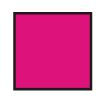
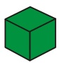
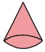
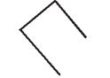
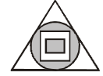
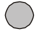

<!DOCTYPE html>
<html>
<head>
	<meta charset="UTF-8">
	<link href="../css/style.css" rel="stylesheet" />
</head>
 <body>
<script type="text/javascript" src="../../practise_code.js"></script>
<script>

//todo - Read question from notepad
var questions = [
["Which of these is a Sphere?","","","","None","A"],
["Which of these is a triangle?","","","","None","C"],
["Which of these is a Square?","","","","None","B"],
["Which of these is a Cube?","","","","None","A"],
["Which of these is a Cone?","","","","None","C"],
["Is this shape open or closed <BR> ? ","Open","Closed","Both","None","A"],
["How many sides does this shape have <br>","2","3","4","5","B"],
["How many faces does this shape have <br>","2","3","4","5","C"],
["Which shape has no sides","","","","none","B"],
["What is outside -  <br> ","",""," and ","none", "C"],
]


</script>
<table><tr>
  <td class="timer-pic"></td><td class="timer-text"><p id="demo" ></p></td> 
</tr>
</table>
<h2 id="test_status"></h2>
<div id="test"></div>
</body>
</html>